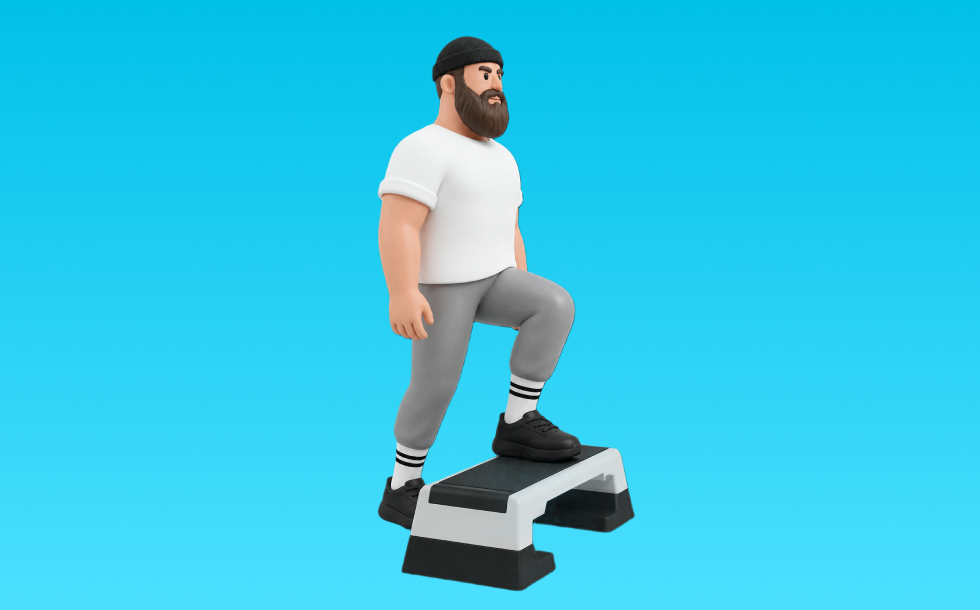

ステップアップ

ステップアップとは、自重を使って「動かす」動作でお尻（臀筋）、脚（大腿四頭筋）を鍛える種目です。可動域が広く、左右のバランスを整えやすいのが特徴で、反動を抑えてコントロールしながら反復します。下半身の筋力・筋量アップが期待できます。
- 対象部位
- 脚
- 器具
- 自重
- 記録形式
- 回数
- 別名
- 台昇り
YouTube動画
YouTubeショート
-
正しいステップアップやり方#shorts #ダイエット
-
トレーニング動画 ステップアップ 100kg
-
正しい腕立て伏せ3つのポイント #筋トレ
-
【バックランジ】怪我なくお尻を鍛える正しいフォーム解説
-
本物の懸垂とは？米海兵隊が教える正しいフォーム 😎 #懸垂 #米海兵隊 #筋トレ #軍事訓練 #ショート雑学 #shorts
-
【初心者必見】腕立て伏せ最短習得ステップ #筋トレ #腕立て伏せ #筋トレ初心者
-
初心者必見🔰15秒でわかる！スミスマシーンde下半身トレーニング3選🦵
-
【ちょー分かりやすい】正しい腕立て伏せのやり方 #腕立て伏せ #筋トレ初心者
-
ベンチプレス40kgから最短で100kgに伸ばす方法
-
【筋トレ解説】脚とお尻を追い込む！バックランジ解説
-
正しい懸垂5つのポイント【筋トレ】
-
【ステップアップの正しいやり方】 いつもの筋トレをステップアップ！｜Training Movie 100｜Tarzan Web
-
懸垂ができない人にまずやってほしいトレーニング #自重トレーニング #カリステニクス #懸垂 #モチベーション #継続は力なり
-
Step-up Tips
-
【筋トレ解説】自宅で手軽に有酸素ダイエット！踏み台昇降の解説
-
【懸垂出来ない人！】最短で出来るようになるステップ教えます！ #懸垂 #筋トレ初心者 #キャリステニクス
-
今すぐ辞めて⚠️脚が太くなるブルガリアンスクワット
-
ジムあるある、最初みんなつまずくよねw #shorts
-
嘘みたいに走りが軽くなるアップ３選 #ランニング塾
-
この方法で懸垂10回出来るようになる！ チャンネル登録をお願いします! #筋トレ #トレーニング #50代
-
みんなはできる？？ #runningdrill
-
ベンチプレスの正しいやり方を紹介 #筋トレ #フィットネス
-
お腹を殴る！？衝撃の方法でフォアハンドのステップアップを目指そう🔥 #卓球 #shorts
-
スイングが別人いなる練習ドリル #ゴルフ#ゴルフレッスン #ドライバー
-
【50m走速く走るコツ】みんなは何秒で走れる？？
-
正しいアブローラー3つのポイント #筋トレ
-
反発を推進力へ変えるドリル#ランニング塾
-
デッドリフトの正しいやり方 #フィットネス #筋トレ #デッドリフト
-
ランニングより健康的に痩せる！ #エクササイズ #ダイエット #フィットネス #フィットネス女子
-
腹筋ローラー 1カ月続けた成果 #筋トレ #腹筋ローラー #アブローラー #腹筋 #ダイエット
-
最短最速で懸垂できない僕が0から10回上げた方法4STEP#shorts
-
絶対に知っておきたい腕立て伏せのコツ！!
-
反り腰さん向けプランクのやり方！
-
【ダンベル】腕トレ４選 #筋肉
-
【筋肉つかない】自重トレ3種目 #自重トレーニング #筋トレ #フィットネス
-
軍隊プッシュアップ・チャレンジ【Part2】🔥⚔️あなたはどこまで行けるかな？？👀...#カリステニクス#キャリステニクス#自重トレーニング#自重トレ #自重#プッシュアップ#腕立て伏せ
-
家トレ、ダンベルだけでもいい体になれる？#筋トレ #ホームトレーニー
-
※特に女性に多いです。もう一度ご自身のフォーム見直してみてください！【アドバイス】
-
【山本式】懸垂ができない人のための完全解説#shorts #youtubeshorts #筋トレ #懸垂 #背中トレ #筋トレ初心者 #筋トレ大学 #筋肉博士
-
初心者でもわかるスクワットの基本のフォーム
動作方法
- 足幅を決め、体幹を固める
- 股関節と膝を同時に曲げて下ろす
- 足裏全体で床を押して立ち上がる
動作ポイント
- 膝とつま先の向きをそろえる
- 胸を落としすぎない
- かかとを浮かせない
ワンポイントアドバイス
- ウォームアップで股関節と足首を動かす
- 高重量の日はセーフティ設定を確認する
目的別回数設定
目的や体力に応じた一般的な目安です。無理のない範囲で調整してください。
- 筋力アップ
- 1〜5回
- 筋肥大
- 6〜12回
- 持久力アップ
- 13〜20回
YouTube動画について
動画はYouTubeの公開情報をもとに表示しています。内容は投稿者によるもので、Biggrによる監修ではありません。
アプリを入手
筋トレやトレーニングの記録はBiggrにお任せください。今すぐ無料で使い始められます。